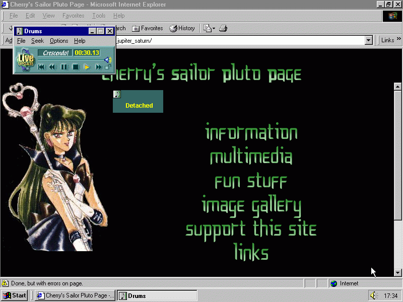

I built my first website on Yahoo! Geocities, it was a Sailor Moon fan page.

I've been hooked ever since. Now I build websites professionally using a variety of technologies. I have a bachelor's degree in Studio Art from Loyola University Chicago and a master's degree in Art Education from the University of Illinois.